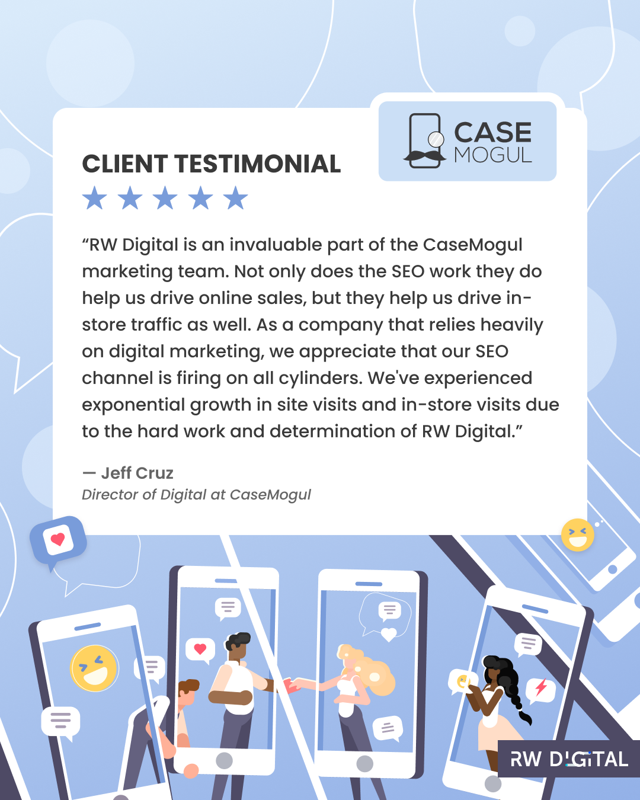
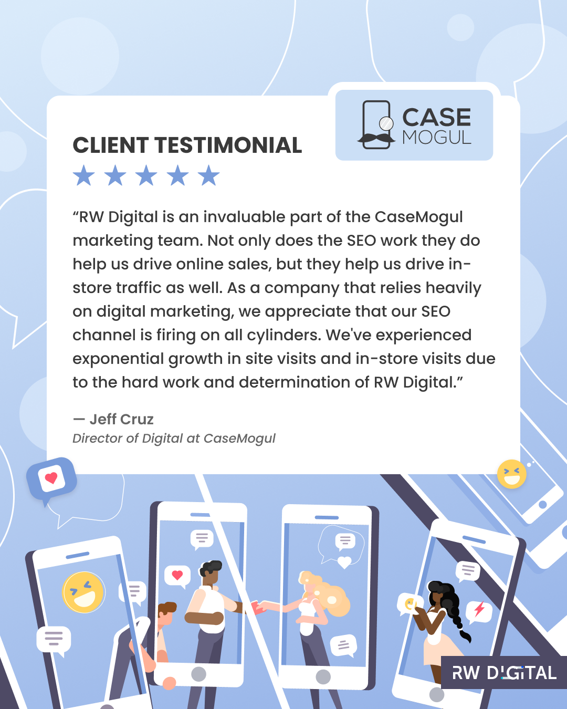

Prior to joining the agency, RW Digital already had an established visual and branding identity for its graphical assets. The goal with my involvement was to emphasize the branding standards for social media and help grow the agency's online presence. Over the course of a year, I collaborated alongside the agency Principal to experiment with various combinations of colours and arrangements for posts, as well as utilize the Instagram
feed as a tool to visually unify content. It was important to find a balance between visually-engaging content and accessibility, as most viewers access social media platforms through mobile and tablet applications.
Since becoming part of the team, I've created posts for topics such as educational content on digital marketing (tutorials, trends, industry updates); testimonials and client feedback for services; holidays and community events; and showcases for client projects.
To view more of my designs for RW Digital, visit the agency's Instagram page at
@digital.rw.


 
